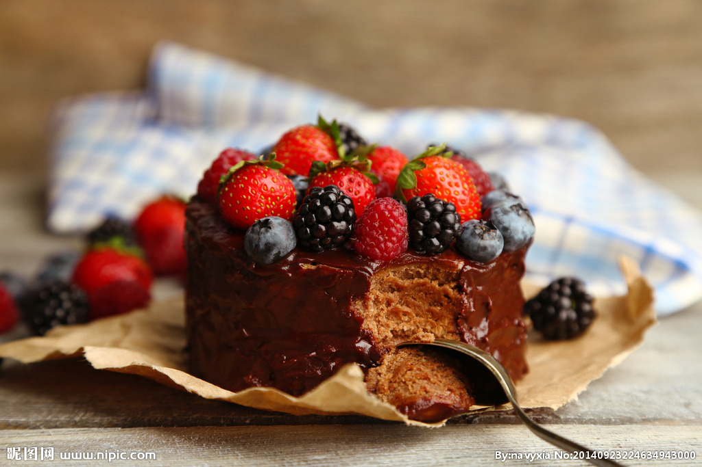

蛋糕（英文名：Cake），是一种古老的西方甜点，一般是由烤箱制作的，蛋糕是用鸡蛋、白糖、小麦粉为主要原料。以牛奶、果汁、奶粉、香粉、色拉油、水，起酥油、泡打粉为辅料。经过搅拌、调制、烘烤后制成一种像海绵的点心。
蛋糕是一种面食，通常是甜的，典型的蛋糕是以烤的方式制作出来。蛋糕的材料主要包括了面粉、甜味剂(通常是蔗糖)、黏合剂(一般是鸡蛋，素食主义者可用面筋和淀粉代替)、起酥油(一般是牛油或人造牛油，低脂肪含量的蛋糕会以浓缩果汁代替)，液体(牛奶，水或果汁)，香精和发酵剂(例如酵母或者发酵粉)。
